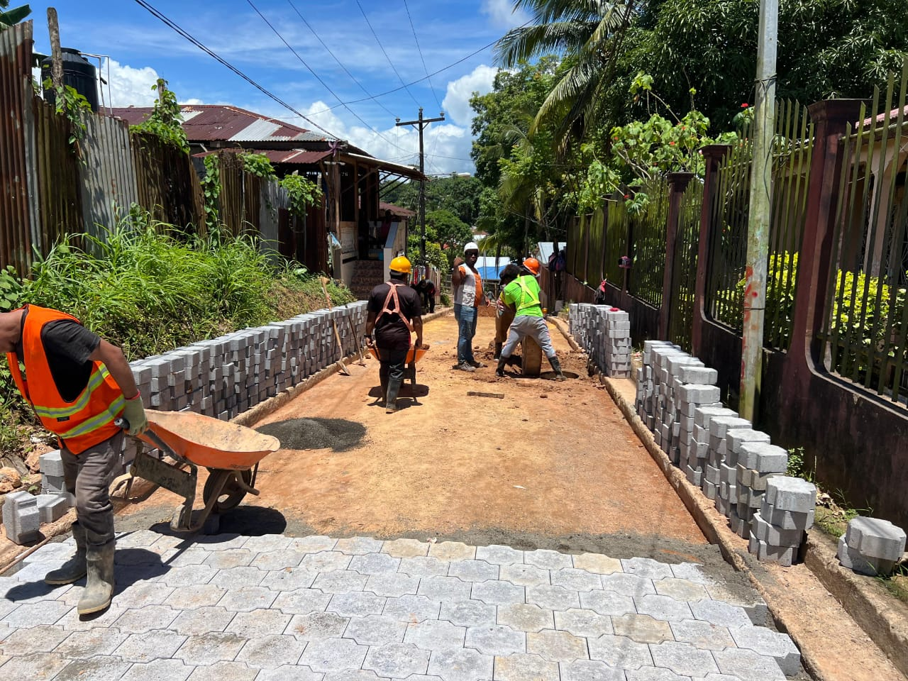

Artículo 1: Tamaño al 70%

Esta imagen se ajusta constantemente al 70% del ancho disponible del artículo.

Esta imagen se ajusta constantemente al 70% del ancho disponible del artículo.
Esta imagen ocupa la mitad del ancho (50%) de su contenedor.
Esta imagen se visualiza a un tamaño más compacto, equivalente al 20% del ancho.